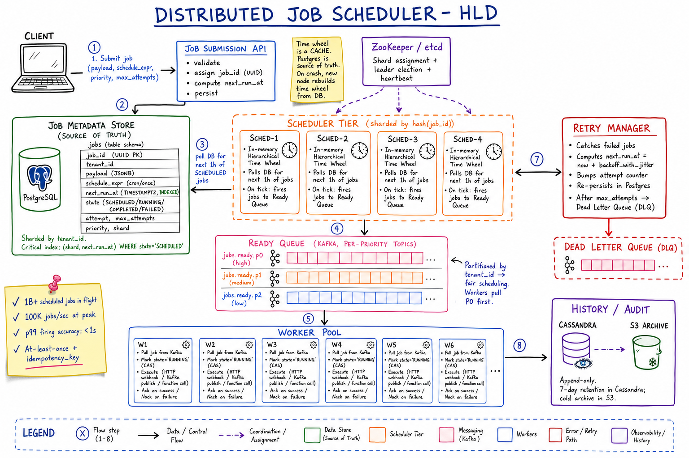
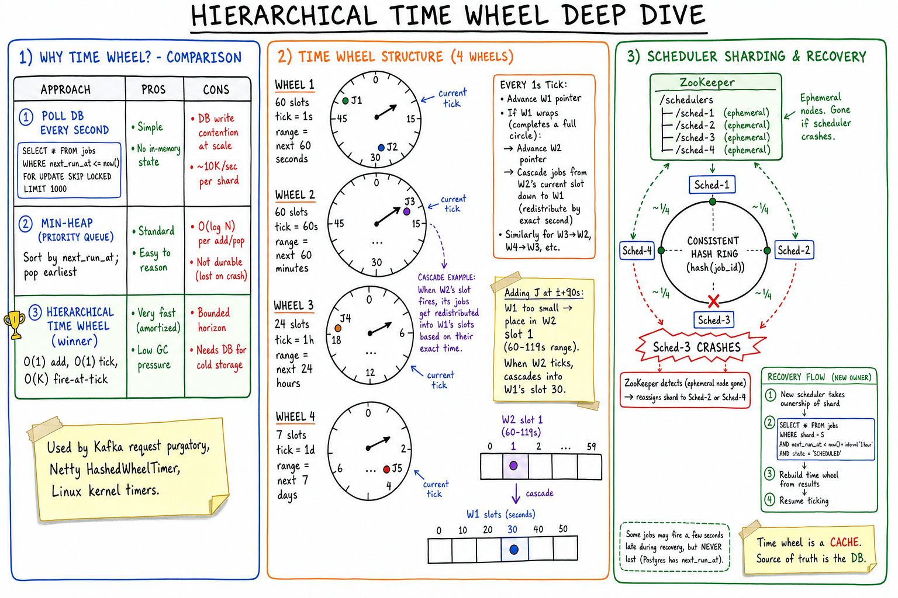
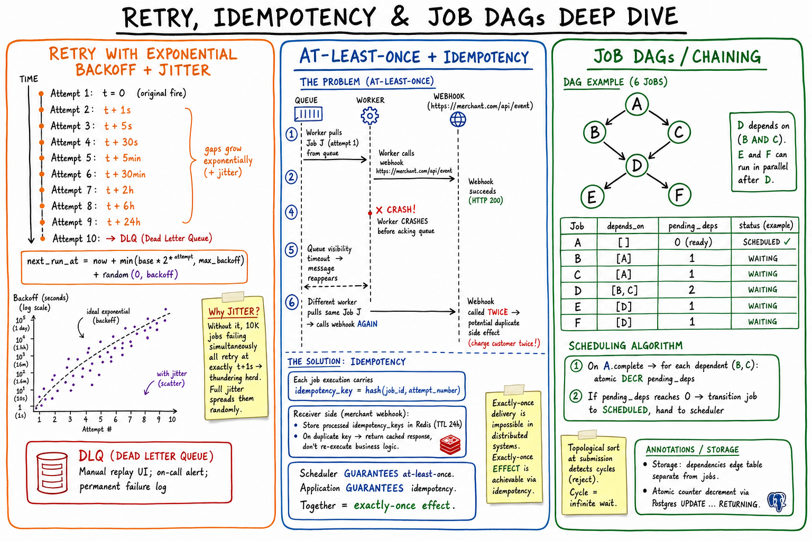

Job Scheduler // HLD
Distributed scheduling at scale: hierarchical time wheel for O(1) firing, sharded schedulers with ZooKeeper coordination, at-least-once delivery + idempotency keys, exponential backoff with jitter, cron with catchup, priority queues with fair scheduling, and job DAGs.

Whiteboard HLD: client submits job to Submission API → persisted in Postgres (source of truth, indexed by next_run_at). Sharded Scheduler tier (4 nodes) each holds an in-memory hierarchical time wheel; ZooKeeper does shard assignment + leader election. On tick, jobs are pushed to per-priority Kafka topics (Ready Queue) partitioned by tenant_id. Workers pull, mark RUNNING via CAS, execute, and ack. Failures go to Retry Manager (exponential backoff + jitter) and after max attempts to DLQ. History archived to Cassandra + S3.
01 — Requirements
Functional
- Submit a job to run now, at a future time, on a cron schedule, or after a delay
- Job = HTTP webhook, Kafka message, function invocation, batch script
- Retries with backoff on failure
- Idempotency — job must run exactly the expected number of times
- Query status, cancel, pause, reschedule
- Job chains/DAGs (job B runs after A succeeds)
- Priority (high-priority jobs cut the line)
Non-Functional
- Scale: 1B+ scheduled jobs, 100K+ jobs executing per second
- Punctuality: within ~1s of scheduled time (p99 < 5s)
- Durability: scheduled job must NEVER be lost (crash/restart safe)
- At-least-once execution with idempotency — better twice than zero
- HA: 99.99%; no SPOF
- Multi-tenancy: fair scheduling across customers
02 — Estimation
Scheduled jobs in flight: 100M at any moment Throughput peak: 100K jobs/sec (9am cron wave) Job record size: ~1KB (payload + metadata) Hot schedule data: 100M x 1KB = 100GB History/audit: 100K/sec x 86400s x 1KB = ~8.6TB/day -> hot in Cassandra ~7 days, cold S3 archive Workers needed: avg job 1s -> 100K slots peak -> ~250K pool at 30-50% utilization
03 — Why It's Hard
- "Is it time yet?" at 100M jobs: can't poll a DB every second for billions of rows
- Durability vs speed: in-memory fast, but crash loses jobs — need both
- At-least-once is unavoidable — worker can crash after executing but before acking. Idempotency must be designed in.
- Thundering herd: 10M cron jobs all set for 9am
- Fairness across tenants: one tenant submits 1M jobs, others must not starve
- Punctuality + retries: retry must not push a job past its deadline
04 — Architecture
Client -> Submission API -> Postgres (source of truth)
|
v (schedulers poll next 1h)
+--------------------------------------+
| Scheduler Tier (sharded by job_id) |
| each node has in-mem time wheel |
| ZooKeeper for shard ownership |
+--------------------------------------+
| (on tick -> fire)
v
Kafka Ready Queue (per-priority topics,
partitioned by tenant_id)
|
v
Worker Pool
|
+-------+------+
| |
success failure
| |
v v
COMPLETED Retry Manager -> DLQ
in Postgres (backoff + jitter)
Two clear tiers: "is it time yet?" (the hard scheduling problem) and "run it" (well-understood queue + workers).
05 — Scheduling Approaches
| Approach | How | Throughput | Verdict |
|---|---|---|---|
| DB polling | SELECT WHERE next_run_at <= now() FOR UPDATE SKIP LOCKED LIMIT 1000 every second | ~10K/sec per shard | Simple; good up to millions of jobs |
| Min-heap | Priority queue sorted by next_run_at | O(log N) per op | In-memory only; lost on crash |
| Hierarchical Time Wheel | Clock-like multi-wheel data structure | Millions/sec, O(1) | Winner for high scale |
Production = all three layered: long-horizon (days/weeks) in Postgres; soon-to-fire (next hour) loaded into in-memory time wheel; firing pushes to Kafka.

Zoom-in: comparison of polling vs min-heap vs time wheel (time wheel wins with O(1) add/tick); four-wheel structure (1s/60s/1h/1d granularity) with cascade behavior; sharding via consistent hash on job_id with ZooKeeper ephemeral nodes for failure detection; recovery flow (new scheduler reads SELECT * FROM jobs WHERE shard=S AND next_run_at < now()+'1h' from Postgres to rebuild its time wheel — time wheel is a cache, DB is the source of truth).
06 — Hierarchical Time Wheel
Imagine a clock with multiple wheels (seconds, minutes, hours, days):
Wheel 1: 60 slots, tick = 1s (covers next 60s) Wheel 2: 60 slots, tick = 60s (covers next 60 min) Wheel 3: 24 slots, tick = 1h (covers next 24h) Wheel 4: 7 slots, tick = 1d (covers next 7 days)
Operations
- Add job at t+Δ: compute which wheel and which slot; append to list — O(1)
- Tick: every 1s advance Wheel 1 pointer; fire jobs at current slot
- Cascade: when Wheel 1 completes a revolution, advance Wheel 2 and redistribute Wheel 2's current-slot jobs down into Wheel 1's slots (based on exact time)
- Fire all jobs at current tick: O(K) where K = jobs in that slot
Why not min-heap? Heap is O(log N) per add/pop. Time wheel is amortized O(1). For 100M jobs, that's the difference between ~27 ops vs 1.
Used by: Kafka request purgatory, Netty's HashedWheelTimer, Linux kernel timers.
08 — Execution & Idempotency
Happy path
- Scheduler pushes job to Ready Queue with
attempt_number=1andidempotency_key = hash(job_id, attempt) - Worker pulls, CAS-updates
state='RUNNING' - Worker executes (HTTP webhook, Kafka publish, etc.)
- On success:
UPDATE jobs SET state='COMPLETED' WHERE id=J AND attempt=N& ack queue
The at-least-once problem
Worker may crash after executing but before acking. Kafka visibility timeout expires → message reappears → another worker re-executes the job. Webhook called twice.
The solution: idempotency_key
- Each execution carries
idempotency_key = hash(job_id, attempt_number) - Webhook receiver stores processed keys in Redis (TTL 24h)
- On duplicate key → return cached response, skip business logic
Scheduler guarantees at-least-once. Application guarantees idempotency. Together = exactly-once effect. (Exactly-once delivery is impossible in distributed systems.)

Zoom-in: exponential backoff with full jitter (random(0, backoff)) prevents thundering herd when many jobs fail simultaneously; sequence diagram showing how at-least-once delivery + idempotency_key (hash(job_id, attempt)) gives exactly-once effect; job DAG example with pending_dependencies counter atomically decremented on each parent completion, topological sort at submission detects cycles.
09 — Retry Strategy
next_run_at = now + min(base * 2^attempt, max_backoff)
+ random(0, backoff) // full jitter
attempt 1: t = 0 (original)
attempt 2: t + 1s
attempt 3: t + 5s
attempt 4: t + 30s
attempt 5: t + 5m
attempt 6: t + 30m
attempt 7: t + 2h
attempt 8: t + 6h
attempt 9: t + 24h
attempt 10: -> DLQ
Why jitter? Without it, 10K jobs failing simultaneously all retry at exactly t+1s → thundering herd hits downstream again. Full jitter (random(0, backoff)) spreads them randomly.
DLQ (Dead Letter Queue): manual replay UI, on-call alert, permanent failure log. Often becomes a debugging interface.
10 — Cron & Catchup
Cron jobs ("0 9 * * *" = 9am daily):
- On registration → compute first
next_run_at - When firing → also compute the next
next_run_atand persist (before executing) - Use a real cron-parsing library (handles DST, leap seconds, timezones)
Catchup policy
If scheduler was down for 6 hours and a daily cron should have fired, what now?
| Policy | Behavior | Use case |
|---|---|---|
ALL | Run all missed firings | Analytics, billing rollups (don't skip data) |
LATEST | Run once with most recent timestamp | Refresh stale dashboard / cache |
SKIP | Don't run any missed | Reminders, time-sensitive notifications |
11 — Priority & Multi-Tenant Fairness
Priority queues
- Separate Kafka topics per priority:
jobs.ready.p0,jobs.ready.p1,jobs.ready.p2 - Workers pull from P0 first, then P1, then P2
- Within a priority: weighted fair queueing across tenants
Fairness
- Tenant A submits 1M jobs, Tenant B submits 10 — B must not starve
- Per-tenant sub-queues; round-robin across tenants within a priority class
- Or: per-tenant rate limit on submission
- Hyper-volume tenants → dedicated worker pool (noisy neighbor isolation)
12 — Job DAGs / Chaining
Each job stores depends_on: [job_id_1, job_id_2, ...].
Algorithm
- At submission: topological sort detects cycles (reject if cyclic — otherwise infinite wait)
- Compute
pending_dependenciescount per job (initial: number of unique parents) - On parent completion: for each dependent, atomic
UPDATE deps SET pending = pending - 1 RETURNING pending - If
pending == 0→ transition dependent to SCHEDULED → hand to scheduler
Storage: dependency edges in a separate table (Postgres): (parent_id, child_id).
13 — Storage
Job metadata (source of truth) — Postgres
CREATE TABLE jobs (
job_id UUID PRIMARY KEY,
tenant_id UUID,
payload JSONB,
schedule_expr VARCHAR, -- "cron 0 9 * * *" or "once"
next_run_at TIMESTAMPTZ, -- INDEXED!
state VARCHAR, -- SCHEDULED, RUNNING, COMPLETED, FAILED
attempt INT,
max_attempts INT,
priority SMALLINT,
shard INT, -- precomputed: hash(job_id) % N
created_at TIMESTAMPTZ,
updated_at TIMESTAMPTZ
);
CREATE INDEX idx_due ON jobs (shard, next_run_at)
WHERE state='SCHEDULED';
- Sharded by
tenant_id(fairness) orjob_id(uniform spread) - The
(shard, next_run_at)partial index is the scheduler's hot path
Ready queue — Kafka
Per-priority topics; partitioned by tenant_id for fair scheduling.
History/audit — Cassandra + S3
Append-only. (job_id, attempt) → (started_at, finished_at, result, error). 7-day retention hot in Cassandra, cold archive in S3.
14 — Scaling
- Scheduler tier: N nodes; shard by hash(job_id); in-memory time wheel per shard
- Postgres: sharded by tenant_id; read replicas for status queries
- Kafka: per-priority topics; partitions = ~2× worker count
- Workers: stateless, autoscale on queue depth (Kafka lag)
- Hot tenant isolation: dedicated worker pool for huge tenants
- Pre-fetch window: load next 1h of jobs into time wheel; refresh every 5 min
15 — Edge Cases
- Scheduler clock skew → NTP; for sub-second adjacent jobs, slight reordering is acceptable
- Worker crash mid-execution → Kafka visibility timeout reappears the message; idempotency_key protects against duplicate side effects
- Scheduler crash → new node rebuilds time wheel from DB; jobs may fire a few seconds late, never lost
- Cron wave at 9am → jitter on registration spreads them; Kafka absorbs the burst; workers drain
- Past-due jobs after downtime → catchup policy decides
- Job runs forever → enforce
max_runtime; worker kills + marks FAILED - Cancel a running job → cooperative: set state='CANCEL_REQUESTED'; worker checks periodically. For HTTP webhooks, no real cancel (already fired).
- DST / timezone → store cron in user's timezone; recompute with timezone library on every fire
- Cycle in DAG → reject at submission via topological sort
16 — Real-World Equivalents
| System | Notes |
|---|---|
| Airbnb Chronos / Airflow | DAG orchestration; workflow-centric; not for billions of jobs but for complex pipelines |
| Google Cloud Scheduler / AWS EventBridge Scheduler | Managed time-based triggers; built on time-wheel internals |
| Quartz | JVM-based; single-node + JDBC clustering; classic |
| Sidekiq / Celery / Resque | Background job processing for Ruby/Python; Redis-backed |
| Temporal / Cadence | Workflow engine with durable execution; goes beyond scheduling |
| Kafka request purgatory | Uses hierarchical time wheel internally for fetch-request timeouts |
Linux cron | Single-node, no HA, no retry — toy compared to distributed |
17 — Interview Q&A
Why not just a cron daemon on every machine?
How do you find jobs that are due to run at scale?
SELECT WHERE next_run_at <= now() FOR UPDATE SKIP LOCKED. At large scale: each scheduler shard maintains an in-memory hierarchical time wheel loaded with its next hour of jobs; ticking the wheel fires them in O(1). DB is the source of truth that survives crashes; time wheel is a cache.What's a hierarchical time wheel and why use it?
At-least-once vs exactly-once execution?
idempotency_key = hash(job_id, attempt); receivers dedupe. Scheduler's job is durability + at-least-once delivery; the application's job is idempotency. Together they give exactly-once effect.How do you shard the scheduler?
What if a scheduler node crashes with in-memory state?
next_run_at for every job. The new node taking the shard does SELECT * FROM jobs WHERE shard=S AND next_run_at < now()+'1h' to rebuild. Some jobs might fire a few seconds late, but they're never lost.How do you handle a thundering herd when 10M cron jobs fire at 9am?
Job runs twice. How do you handle it?
idempotency_key = hash(job_id, attempt). Webhook receivers and downstream services dedupe by this key (Redis with TTL). The scheduler guarantees at-least-once; the application guarantees idempotency.How do you prevent a single tenant from monopolizing workers?
How does cron catchup work after downtime?
ALL runs every missed firing (analytics), LATEST runs once with most-recent timestamp (cache refresh), SKIP ignores missed firings (timely reminders). Stored as job metadata; scheduler applies on recovery.How do you support job DAGs?
depends_on and a pending_dependencies counter. On parent completion, atomic UPDATE ... SET pending = pending - 1. When counter hits 0, transition dependent to SCHEDULED. Storage: dependency edges in a separate table. Topological sort at submission detects cycles.How do you cancel a running job?
state='CANCEL_REQUESTED' in DB. Worker periodically checks state during long-running jobs. For HTTP webhooks, no real cancel is possible (request already fired); we mark cancelled in our state and document that the side effect may still have happened. Some systems use thread interrupts but that's risky.